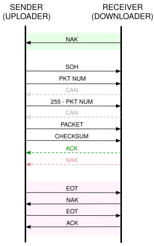
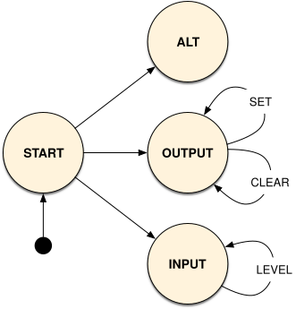

Lab 2: Shell and Bootloader¶
Handed out: Tuesday, January 28, 2020
Due: Monday, February 10, 2020
Introduction¶
In this assignment, you will write useful utilities, libraries, and a simple shell for your Raspberry Pi. You’ll also write generic drivers for GPIO, UART, and the built-in timer. Finally, you’ll write a “bootloader” using your new drivers that loads program binaries over UART using the XMODEM protocol and executes them.
Getting the Skeleton Code¶
To get the skeleton code for lab2, fetch the updates from our git repository to your development machine.
$ git fetch skeleton
$ git merge skeleton/lab2
This is the directory structure of our repository. The directories you will be working on this assignment are marked with *.
.
├── bin : common binaries/utilities
├── doc : reference documents
├── ext : external files (e.g., resources for testing)
├── tut : tutorial/practices
│ ├── 0-rustlings
│ ├── 1-blinky
│ └── 2-shell : questions for lab2 *
├── boot : bootloader *
├── kern : the main os kernel *
└── lib : required libraries
├── pi *
├── shim
├── stack-vec *
├── ttywrite *
├── volatile *
└── xmodem *
Please resolve conflict if you have and proceed to the next phase.
We recommend the following directory structure for your assignments.
Confirm that your directories are properly laid out by running make
inside the kern directory now. If all is well, the command will
return successfully.
If everything is good, feel free to explore the contents of the repository.
This and future assignments include writing questions that you must respond to. Here’s an example of such question:
How do you set other GPIO pins? (1-blinky)
In assignment 1-blinky, you enabled GPIO pin 16 as an output and then repeatedly set
and cleared it by writing to registers GPFSEL1, GPSET0, and GPCLR0.
Which three registers would you write to to do the same for GPIO pin 27?
Which physical pin on the Raspberry Pi maps to GPIO pin 27?
The word in a parenthesis of the question indicates the name of a file located inside
questions/ directory relative to the lab name in which the question is being
asked. For instance, every questions in this Lab2: Shell and Bootloader should be
answered in tut/2-shell/questions/ subdirectory. Note that we have pre-generated
empty files for every question.
Practice responding to questions now by answering the 1-blinky question above.
Phase 1: Oxidation¶
In this phase, you will write two libraries, one command-line
utility, and review one library. You will be working in the
stack-vec, volatile, ttywrite, and xmodem skeleton
subdirectories located in lib directory.
All projects are being managed with Cargo. You will find the
following cargo commands useful:
cargo build- build an application or librarycargo test- test an application or librarycargo run- run an applicationcargo run -- $flags- run an application and pass arbitrary flags to it
For more information on using Cargo and how Cargo works, see the Cargo Book.
Subphase A: StackVec¶
One important facility that operating systems provide is memory
allocation. When a C, Rust, Java, Python, or just about any
application calls malloc() and malloc() has run out of
memory from the operating system, a system call is eventually made
to request additional memory. The operating system determines if
there is memory available, and if so, fulfills the request for
memory.
Memory allocation is a complicated story.
In practice, modern operating systems like Linux have a complicated relationship with memory allocation. For instance, as an optimization, most requests for memory allocation are only “virtually” handled: no physical memory is actually allocated until the application tries to use the newly allocated memory. Nonetheless, most operating systems aim to provide the illusion that they are allocating memory in the simplistic manner we’ve described. Operating systems are master liars (🍰).
Heap-allocated structures like Vec, String, and Box
internally call malloc() to allocate memory as necessary. This
means that these structures require operating system support to
function. In particular, they require the operating system to
support memory allocation. We haven’t yet started writing our
operating system, so clearly there’s no memory allocation support
for our tiny bare-metal programs to make use of. As such, we can’t
use heap-allocated structures like Vec until our operating
system is further along.
This is a real shame because Vec is a nice abstraction! It
allows us to think about pushing and poping elements
without having to keep track of memory ourselves. How we can get
the benefits of the Vec abstraction without supporting memory
allocation?
One common technique is to pre-allocate memory and then hand
that memory to a structure to abstract away. Some ways to
pre-allocate memory include using static declarations to set
apart memory in the static section of a binary or through stack
allocations from local variable declarations. In any case, the
allocations is of a fixed, predetermined size.
In this subphase, you will implement the StackVec structure, a
structure that exposes a Vec-like API when given pre-allocated
memory. You will use the StackVec type later in phase 2 when
implementing a shell for your Raspberry Pi. You will work in the
lib/stack-vec skeleton subdirectory. The subdirectory contains the
following files:
Cargo.toml- configuration file for Cargosrc/lib.rs- where you will write your codesrc/tests.rs- tests that will run whencargo testis called
The StackVec Interface¶
A StackVec<T> is created by calling StackVec::new(),
passing in a mutable slice to values of any type T. The
StackVec<T> type implements many of the methods that
Vec
implements and is used in much the same way. Here’s an example of
a StackVec<u8> being used:
let mut storage = [0u8; 10];
let mut vec = StackVec::new(&mut storage);
for i in 0..10 {
vec.push(i * i).expect("can push 10 times");
}
for (i, v) in vec.iter().enumerate() {
assert_eq!(*v, (i * i) as u8);
}
let last_element = vec.pop().expect("has elements");
assert_eq!(last_element, 9 * 9);
We’ve declared the StackVec structure for you already:
pub struct StackVec<'a, T: 'a> {
storage: &'a mut [T],
len: usize
}
Understanding StackVec¶
The following questions test your understanding about the
StackVec interface:
Why does push return a Result? (push-fails)
The push method from Vec in the standard library has
no return value, but the push method from our
StackVec does: it returns a Result indicating that
it can fail. Why can StackVec::push() fail where
Vec::push() does not?
Why is the 'a bound on T required? (lifetime)
struct StackVec<'a, T> { buffer: &'a mut [T], len: usize }
Rust automatically enforces the bound T: 'a and will complain
if type T lives shorter than the lifetime 'a. For instance,
if T is &'b str and 'b is strictly shorter than 'a,
Rust won’t allow you to create the instance of StackVec<'a, &'b str>.
Why is the bound required? What could go wrong if the bound wasn’t enforced by Rust?
Why does StackVec require T: Clone to pop()? (clone-for-pop)
The pop method from Vec<T> in the standard library is
implemented for all T, but the pop method from our
StackVec is only implemented when T implements the
Clone trait. Why might that be? What goes wrong when the
bound is removed?
Implementing StackVec¶
Implement all of the unimplemented!() StackVec methods in
stack-vec/src/lib.rs. Each method is documented in the source
code. We have also provided tests in src/tests.rs that help
ensure that your implementations are correct. You can run these
tests with cargo test. You’ll also need to implement the
Deref, DerefMut, and IntoIterator traits for
StackVec as well as the IntoIterator trait for
&StackVec for all of the cargo test tests to pass. Once
you feel confident that you implementation is correct and have
answered this subphase’s questions, proceed to the next subphase.
Which tests make use of the Deref implementations? (deref-in-tests)
Read through the tests we have provided in src/tests.rs.
Which tests would fail to compile if the Deref
implementation did not exist? What about the DerefMut
implementation? Why?
Our unit tests are incomplete!
Our unit tests provide a baseline truth, but they are not complete! We will run additional tests when we grade your assignment. You may wish to find the gaps in our tests and add additional tests of your own to fill them.
Subphase B: volatile¶
In this subphase, you will learn about volatile memory accesses,
read the source code in the volatile skeleton subdirectory,
and answer questions related to the source code. You won’t be
writing any code in this subphase.
Like operating systems, compilers are masters at making things appear as if they’re doing what you think they’re doing when in reality, they’re really doing something entirely different for the sake of optimization. One such optimization is dead-access elimination: compilers remove memory accesses (reads and writes) when they can prove doing so has no observable effect on the program’s execution. For instance, consider the following program:
fn f() {
let mut x = 0;
let y = &mut x;
*y = 10;
}
The compiler can completely eliminate the write to *y by
reasoning that *y is never read after it’s written. The
compiler concludes that as a result, the write cannot possibly
effect the program, and eliminates it in the compiled binary. For
the same reason, it can then proceed to eliminate the declaration
for y, the declaration for x, and calls to f()
entirely.
These kinds of optimizations are almost exclusively beneficial:
they speed up our programs without affecting their outcome. But
sometimes these optimizations can have unintended consequences.
Say, for example, that y was pointing to a write-only
memory-mapped register. Then, writes to *y will have
observable effects without having to read *y thereafter. If
the compiler is not aware of this, it will optimize away these
writes, and our program will not function correctly.
How can we force the compiler to keep around reads and writes that
appear to have no effects at the source code level? This is where
volatile memory accesses come in: the compiler promises not
to optimize away volatile memory accesses. So if we want to ensure
a read or write occurs at runtime, we must perform a volatile
memory access.
Rusty volatile¶
In Rust, we use the read_volatile and write_volatile methods to perform volatile reads and writes to a raw pointer.
What’s a raw pointer?
By now you’re familiar with references (&T and &mut T).
A raw pointer in Rust (*const T and *mut T) is a
“reference” that isn’t tracked with lifetimes by Rust’s borrow
checker. Because of this, read or writes to these pointers may
be invalid, just as in C. Rust considers them unsafe, and
code that reads or writes them must be annotated with
unsafe to indicate this. You can read more about raw
pointers in the
rustdocs.
Calling read_volatile and write_volatile every time we want to perform a volatile read or write is error prone and frustrating. Thankfully Rust provides us the tools to make this easier and safer. Ideally we can simply declare a pointer as volatile (as in C) and ensure that every read or write thereafter is volatile. Even better, we should be able declare a pointer as read-only, write-only (unlike in C), or read/write and ensure only the appropriate memory accesses can be made.
Introducing Volatile, ReadVolatile, WriteVolatile, and UniqueVolatile¶
The volatile crate in the volatile/ skeleton subdirectory
implements these four types that allow us to do just this. Read
the documentation for these types now by running
cargo doc --open inside of the volatile/ directory.
Why does Unique<Volatile> exist? (unique-volatile)
Both Volatile and Unique<Volatile> allow read/write
volatile accesses to an underlying pointer. According to the
documentation, what is the difference between these two
types?
Now open the source code in src/lib.rs, src/traits.rs,
and src/macros.rs. Read through the source code to the
best of your abilities. When you’re ready, answer the following
questions. Once you have answered these questions, you’re ready
to move on to the next subphase.
What’s with #[repr(C)]?
The #[repr(C)] annotation forces Rust to lay out the
structure’s fields in the same way that C would. In general,
Rust optimizes the order and padding between fields of
structures in an unspecified way. When we cast a raw address to
a pointer to a structure, we typically have a very specific
memory layout in mind. The #[repr(C)] annotation lets us
confide that Rust will arrange the structure as we intend it
to, not as it wishes.
How are read-only and write-only accesses enforced? (enforcing)
The ReadVolatile and WriteVolatile types make it
impossible to write and read, respectively, the underlying
pointer. How do they accomplish this?
What do the macros do? (macros)
What do the readable!, writeable!, and
readable_writeable! macros do?
Subphase C: xmodem¶
In this subphase, you will implement the XMODEM file transfer
protocol in the xmodem library in the xmodem/ skeleton
subdirectory. You will primarily be working in
xmodem/src/lib.rs.
XMODEM is a simple file transfer protocol originally developed in 1977. It features packet checksums, cancellation, and automatic retries. It is widely implemented and used for transfers through serial interfaces. Its best feature, however, is its simplicity. For more about its history, see the XMODEM Wikipedia article.
We will use the XMODEM protocol to transfer files to the Raspberry Pi. While we could use existing implementations of the XMODEM protocol to send data to the Pi, we will still need to write our own receiver. So, while we’re at it, we’ll be implementing XMODEM transmission as well.
The Protocol¶
The XMODEM protocol is described in detail in the Understanding The X-Modem File Transfer Protocol txt file. We describe it again here, for posterity.
Do not base your implementation off of Wikipedia’s explanation!
While Wikipedia’s explanation is helpful at a high level, many of the details presented there are different from the protocol we’ll be implementing here. As such, do not use the article as a reference for this subphase.
XMODEM is a binary protocol: bytes are sent and received in the raw. It is also “half duplex”: at any point in time, either the sender or receiver is sending data, but never both. Finally it is packet-based: data is separated into 128 byte chunks known as packets. The protocol dictates which bytes are sent when, what they mean, and how they’re interpreted.
First, we define a few constants:
const SOH: u8 = 0x01;
const EOT: u8 = 0x04;
const ACK: u8 = 0x06;
const NAK: u8 = 0x15;
const CAN: u8 = 0x18;
To start the file transfer, the receiver sends a NAK byte
while the sender waits for a NAK byte. Once the sender has
received the NAK byte, packet transmission begins. The
receiver only sends a NAK byte to begin the file transfer, not
once for every packet.
Once file transfer has begun, each packet’s transmission and
reception is identical. Packets are numbered in sequential order
starting at 1 and wrap around to 0 after 255.
{kind=link}

XMODEM protocol diagram¶
To send a packet, the sender:
Sends an
SOHbyte.Sends the packet number.
Sends the 1s complement of the packet number (
255 - $packet_number).Sends the packet itself.
Sends the packet checksum.
The checksum is the sum of all of the bytes in the packet mod 256.
Reads a byte from the receiver.
If the byte is
NAK, transmission for the same packet is retried up to 10 times.If the byte is
ACK, the next packet is sent.
The receive a packet, the receiver performs the inverse:
Waits for an
SOHorEOTbyte from the sender.
If a different byte is received, the receiver cancels the transfer.
If an
EOTbyte is received, the receiver performs end of transmission.Reads the next byte and compares it to the current packet number.
If the wrong packet number is received, the receiver cancels the transfer.
Reads the next byte and compares it to the 1s complement of the packet number.
If the wrong number is received, the receiver cancels the transfer.
Reads a packet (128 bytes) from the sender.
Computes the checksum for the packet.
The checksum is the sum of all of the bytes in the packet mod 256.
Reads the next byte and compares it to the computed checksum.
If the checksum differs, sends a
NAKbyte and retries reception for the same packet.If the checksum is the same, sends an
ACKbyte and receives the next packet.
To cancel a transfer, a CAN byte is sent by either the
receiver or sender. When either side receives a CAN byte, it
errors out, aborting the connection.
To end the transmission, the sender:
Sends an
EOTbyte.Waits for a
NAKbyte. If a different byte is received, the sender errors out.Sends a second
EOTbyte.Waits for an
ACKbyte. If a different byte is received, the sender errors out.
To end the transmission, the receiver performs the following after
receiving the first EOT:
Sends a
NAKbyte.Waits for a second
EOTbyte. If a different byte is received, the receiver cancels the transfer.Sends an
ACKbyte.
Implementing XMODEM¶
We have provided an unfinished implementation of the XMODEM
protocol in the xmodem skeleton subdirectory. Your task is to
complete the implementation by writing the expect_byte,
expect_byte_or_cancel, read_packet, and write_packet
methods in src/lib.rs. Your implementations should make use of
the internal state of the Xmodem type: packet and
started. We recommend reading over the existing code before
starting.
You should begin by implementing the expect_byte and
expect_byte_or_cancel methods. You should then make use of all
four of the helper methods (including read_byte and
write_byte) to implement read_packet and write_packet.
To see how these methods are used, read the transmit and
receive implementations which transmit or receive a complete
data stream using XMODEM via these methods. Be mindful of the
specifications in the doc-comments. You can test your
implementation using cargo test. Once you are confident that
your implementation is correct, proceed to the next subphase.
Do not use any additional items from std.
Your implementation should only use items from shim::io. It
should not use other items from std or any other libraries.
Hint
Our reference implementations for {read,write}_packet
are roughly 43 lines of code each.
Hint
Use the ? operator generously.
Hint
The test source code can be a helpful guide.
Hint
You can use ioerr! macro to make and return a new io::Error easily.
Please refer shim/src/macros.rs to find more macros which can be useful.
Subphase D: ttywrite¶
In this subphase, you will write a command line utility,
ttywrite, that will allow you to send data to your Raspberry
Pi in the raw or via the XMODEM protocol. You will use your
xmodem library from the previous subphase in your
implementation. You will write your code in
ttywrite/src/main.rs. To test your ttywrite
implementation, use the provided test.sh script.
What is a serial device?
A serial device is any device that accepts communication one bit at a time. This is known as serial communication. In contrast, in parallel communication multiple bits are being transferred at any point in time in parallel. We will be communicating with our Raspberry Pi via its UART device, a serial communication device.
What is a TTY?
A TTY is a “teletypewriter”. It is a vestigial term that was adopted in computing to describe computer terminals. The term later become more general, coming to describe any device intended to be communicated with over serial. For this reason, your computer calls the device mapping to your Raspberry Pi a TTY.
Command-Line Interface¶
The skeleton code we have provided for ttywrite already parses
and validates command-line arguments. To do so, it uses the
structopt crate from
crates.io which itself uses
clap. You’ll notice that we list it as a
dependency in the Cargo.toml file.
structopt works through
code generation. We simply annotate a structure and its fields
with a declaration of our command-line arguments and
structopt generates the
code to actually parse the command-line flags.
To see the interface that
structopt generates,
call the application with --help. Remember that you can pass
arbitrary flags when using cargo run: cargo run -- --help.
Take a look at the interface now. Then, take a look at the Opt
structure in main.rs and compare the interface with its
definition.
What happens when a flag’s input is invalid? (invalid)
Try passing in some invalid values for flags. For instance,
it should not be possible to set -f to idk. How does
structopt know to reject invalid values?
You’ll notice that there are plenty of options. All of these correspond to settings available on a serial device. For now it’s not important to know exactly what these settings do.
Talking to a Serial Device¶
In main, you’ll see a call to
serial::open.
This is calling the open function from the
serial crate, also on
crates.io. This open function returns
a
TTYPort
which allows you to read and write to the serial device (via its
io::Read and io::Write trait implementations) as well as
read and set settings on a serial device (via its SerialDevice
trait implementation).
Writing the Code¶
Implement the ttywrite utility. Your implementation should set
all of the appropriate settings passed in via the command-line
stored in the opt variable in main. It should read from
stdin if no input file is passed in or from the input file if
one is passed in. It should write the input data to the passed in
serial device. If the -r flag is set, it should send the data
as it is. Otherwise, you should use your xmodem implementation
from the previous subphase to send the data using the XMODEM
protocol. You should print the number of bytes sent on a
successful transmission.
To transmit using the XMODEM protocol, your code should use either
the Xmodem::transmit or Xmodem::transmit_with_progress
methods from the xmodem library. We recommend using
transmit_with_progress so that your utility indicates progress
throughput the transmission. In its simplest form, this might look
as follows:
fn progress_fn(progress: Progress) {
println!("Progress: {:?}", progress);
}
Xmodem::transmit_with_progress(data, to, progress_fn)
You can test the baseline correctness of your implementation using
the test.sh script in the ttywrite directory. When your
implementation is at least somewhat correct, you will see the
following when the script is run:
Opening PTYs...
Running test 1/10.
wrote 333 bytes to input
...
Running test 10/10.
wrote 232 bytes to input
SUCCESS
Hint
You can retrieve a handle to stdin with
io::stdin().
Hint
You may find the io::copy() function useful.
Hint
The main() function in our reference implementation
is roughly 35 lines of code.
Hint
Keep the TTYPort documentation open while writing your code.
Why does the test.sh script always set -r? (bad-tests)
The test.sh script that we have provided always uses the
-r flag; it doesn’t test that your utility uses the
XMODEM protocol when it is asked to. Why might that be? What
does the XMODEM protocol expect that sending data in the raw
doesn’t that makes testing its functionality difficult?
Installing ttywrite utility¶
After finish writing the ttywrite utility,
install the tool with cargo install --path . command.
This command will be used later
to communicate with the bootloader.
Phase 2: Not a Seashell¶
In this phase, you will be implementing drivers for the built-in timer, GPIO, and UART devices. You’ll use then these drivers to implement a simple shell. In the next phase, you’ll use the same drivers to implement a bootloader.
What’s a driver?
The term driver, or device driver, describes software that directly interacts with and controls a hardware device. Drivers expose a higher-level interface to the hardware they control. Operating systems may interact with device drivers to expose an even higher-level interface. For instance, the Linux kernel exposes ALSA (Advanced Linux Sound Architecture), an audio API, which interacts with device drivers that in-turn interact directly with sound cards.
Subphase A: Getting Started¶
Project Structure¶
Let’s recall the repository structure we saw at the beginning of this lab.
.
├── ...
├── boot : bootloader *
├── kern : the main os kernel *
└── lib : required libraries
├── pi *
├── shim
├── stack-vec *
├── ttywrite *
├── volatile *
└── xmodem *
All the libraries used by boot and kernel are located under
the lib directory.
shim library selectively depends on either std or no_std library.
With #[cfg(feature = "no_std")] specified, shim makes use of
core_io and the custom no_std module which has minimum library
we need such as ffi, path and sync. Otherwise, mostly in
the test code, shim just uses std library.
pi subdirectory contains all of your driver code. The
pi library makes use of the volatile library. It also
depends on the shim library.
boot and kernel make use of the pi library to communicate with
hardware. They also depend on shim. In addition to that, boot
also depends on the xmodem library, and kernel depends on
the stack-vec library. The volatile library
has no dependencies. The diagram below illustrates these
relationships:
{kind=link}
Kernel¶
The kern directory contains the code for the operating
system kernel: the core of your operating system. Calling make
inside this directory builds the kernel. The build output is
stored in the build/ directory. To run the kernel, copy the
build/kernel.bin file to the root of the MicroSD card as
kernel8.img. You may wish to use a script to copy the kernel
image to the sdcard with make install command.
Please refer the Tools page to find details
about our Makefile.
At present, the kernel does absolutely nothing. By the end of this phase, the kernel will start up a shell which you can communicate with.
As we saw above, the kernel crate depends on the pi library.
As a result, you can use all of the types and items from the pi library
in the kernel.
Documentation¶
While writing your device drivers, you’ll want to keep the BCM2837 ARM Peripherals Manual open.
Subphase B: System Timer¶
In this subphase, you will write a device driver for the ARM
system timer. You will primarily be working in
lib/pi/src/timer.rs and kern/src/main.rs. The ARM
system timer is documented on page 172 (section 12) of the
BCM2837 ARM Peripherals
Manual.
Start by looking at the existing code in lib/pi/src/timer.rs.
In particular, note the relationship between the following
sections:
const TIMER_REG_BASE: usize = IO_BASE + 0x3000;
#[repr(C)]
struct Registers {
CS: Volatile<u32>,
CLO: ReadVolatile<u32>,
CHI: ReadVolatile<u32>,
COMPARE: [Volatile<u32>; 4]
}
pub struct Timer {
registers: &'static mut Registers
}
impl Timer {
pub fn new() -> Timer {
Timer {
registers: unsafe { &mut *(TIMER_REG_BASE as *mut Registers) },
}
}
}
The one line of unsafe in this program is very important: it
casts the TIMER_REG_BASE address to a *mut Registers and
then casts that to an &'static mut Registers. We are telling
Rust that we have a static reference to a Registers structure
at address TIMER_REG_BASE.
What is at the TIMER_REG_BASE address? On page 172 of the
BCM2837 ARM Peripherals
Manual,
you’ll find that 0x3000 is the peripheral offset for the ARM
system timer. Thus, TIMER_REG_BASE is the address at which the
ARM system timer registers start! After this one line of
unsafe, we can use the registers field to access the
timer’s registers safely. We can read the CLO register with
self.registers.CLO.read() and write the CS register with
self.registers.CS.write(), then combine them together to represent
the number of elapsed microseconds.
Why can’t you write to CLO or CHI? (restricted-reads)
The BCM2837 documentation states that the CLO and
CHI registers are read-only. Our code enforces this
property. How? What prevents us from writing to CLO or
CHI?
What exactly is unsafe?
In short, unsafe is a marker for the Rust compiler that
you’re taking control of memory safety: the compiler won’t
protect you from memory issues. As a result, in unsafe
sections, Rust lets you do anything you can do in C. In
particular, you can cast between types with more freedom,
dereference raw pointers, and fabricate lifetimes.
But note that unsafe is very unsafe. You must ensure that
everything you do in an unsafe section is, in fact safe.
This is more difficult than it sounds, especially when Rust’s
idea of safe is much stricter than in other languages. As
such, you should try not to use unsafe at all. For
operating systems, unfortunately, we must use unsafe so
that we can directly speak to hardware, but we’ll typically
limit our use to one line per driver.
If you want to learn more about unsafe, read Chapter 1 of
the
Nomicon.
Implement the Driver¶
Implement the Timer::read(), current_time(), and
spin_sleep() in lib/pi/src/timer.rs.
The signatures on these items indicate
their expected functionality. You’ll need to read the timer’s
documentation in the BCM manual to implement Timer::read(). In
particular, you should understand which registers to read to
obtain the timer’s current u64 value. You can build the pi
library with cargo build. You can also use cargo check to
type-check the library without actually compiling it.
Hint
You’ll find the core::time::Duration page useful.
Testing Your Driver¶
Let’s test your driver by ensuring that spin_sleep() is
accurate. We’ll write the code to do this in
kern/src/main.rs.
Copy your LED blinky code from phase 4 of lab 1 into
main.rs. Instead of the for loop based sleep function,
use your newly written spin_sleep() function with Duration
to pause between blinks. Compile the kernel, load it onto the MicroSD card
as kernel8.img, and then run it on the Raspberry Pi. Ensure
that the LED blinks at the frequency that you intended it to. Try
other pause times and ensure that they all work as expected. Until
you write the bootloader in phase 3, you’ll need to keep swapping
the MicroSD card between the Pi and your computer to try out
different binaries.
If your timer driver is working as expected, proceed to the next subphase.
Subphase C: GPIO¶
In this subphase, you will write a generic, pin-independent device
driver for GPIO. You will primarily be working in
lib/pi/src/gpio.rs and kern/src/main.rs. The GPIO
subsystem is documented on page 89 (section 6) of the BCM2837 ARM
Peripherals
Manual.
State Machines¶
All hardware devices are state machines: they begin at a predetermined state and transition to different states based on explicit or implicit inputs. The device exposes different functionality depending on which state it is in. In other words, only some transitions are valid in some states. Importantly, this implies that some transitions are invalid when the device is in a given state.
Most programming languages make it impossible to faithfully encode the semantics of a state machine in hardware, but not Rust! Rust lets us perfectly encode state machine semantics, and we’ll take advantage of this to implement a safer-than-safe device driver for the GPIO subsystem. Our driver will ensure that a GPIO pin is never misused, and it will do so at compile-time.
Below is the state diagram for a subset of the GPIO state machine for a single pin:
{kind=link}

GPIO State Diagram¶
Our goal is to encode this state machine in Rust. Let’s start by interpreting the diagram:
The GPIO starts in the
STARTstate.From the
STARTstate it can transition to one of three states:ALT- no transitions are possible from this stateOUTPUT- two “self” transitions are possible:SETandCLEARINPUT- one “self” transition is possible:LEVEL
Which transitions did you follow in your lab 1 blinky? (blinky-states)
When you implementing the blinky code in phase 4 of lab 1, you implicitly implemented a subset of this state machine. Which transitions did your code implement?
We’ll use Rust’s type system to ensure that a pin can only be
SET and CLEARed if it has been transitioned to the
OUTPUT state and the LEVEL read if it is in the INPUT
state. Take a look at the declaration for the GPIO structure
in lib/pi/src/gpio.rs:
pub struct Gpio<State> {
pin: u8,
registers: &'static mut Registers,
_state: PhantomData<State>
}
The structure has one generic argument, State. Except for
PhantomData, nothing actually uses this argument. This is
what
PhantomData
is there for: to convince Rust that the structure somehow uses the
generic even though it otherwise wouldn’t. We’re going to use the
State generic to encode which state the Gpio device is in.
Unlike other generics, we must control this parameter and ensure
that a client can never fabricate it.
The state! macro generates types that represent the states a
Gpio can be in:
states! {
Uninitialized, Input, Output, Alt
}
// Each parameter expands to an `enum` that looks like:
enum Input { }
This is also weird; why would we create an enum with no
variants? enum’s with no variants have a nice property: they
can never be instantiated. In this way, these types act purely
as markers. No one can ever pass us a value of type Input
because such a value can never be constructed. They exist purely
at the type-level.
We can then implement methods corresponding to valid transitions
given that a Gpio is in a certain state:
impl Gpio<Output> {
/// Sets (turns on) the pin.
pub fn set(&mut self) { ... }
/// Clears (turns off) the pin.
pub fn clear(&mut self) { ... }
}
impl Gpio<Input> {
/// Reads the pin's value.
pub fn level(&mut self) -> bool { ... }
}
This ensures that a Gpio can only be set and cleared
when it is a Gpio<Output> and its level read when it is a
Gpio<Input>. Perfect! But how do we actually transition
between states? Hello, Gpio::transition()!
impl<T> Gpio<T> {
fn transition<S>(self) -> Gpio<S> {
Gpio {
pin: self.pin,
registers: self.registers,
_state: PhantomData
}
}
}
This method lets us transition a Gpio from any state to any
other state. Given a Gpio in state T, this method returns
a Gpio in state S. Note that it works for all S and
T. We must be very careful when calling this method. When
called, we are encoding the specification of a transition in the
state diagram. If we get the specification or encoding wrong, our
driver is wrong.
To use the transition() method, we need to tell Rust which
type we want as an output S in Gpio<S>. We do this by
giving Rust enough information so that it can infer the S
type. For instance, consider the implementation of the
into_output method:
pub fn into_output(self) -> Gpio<Output> {
self.into_alt(Function::Output).transition()
}
This method requires its return type to be Gpio<Output>. When
the Rust type system inspects the call to transition(), it
will search for a Gpio::transition() method that returns a
Gpio<Output> to satisfy the requirement. Since our
transition method returns Gpio<S> for any S, Rust will
replace S with Output and use that method. The result is
that we’ve transformed our Gpio<Alt> (from the into_alt()
call) into a Gpio<Output>.
What would go wrong if a client fabricates states? (fake-states)
Consider what would happen if we let the user choose the
initial state for a Gpio structure. What could go wrong?
Why is this only possible with Rust?
Notice that the into_ transition methods take a Gpio by
move. This means that once a Gpio is transitioned into a
another state, it can never be accessed in the previous state.
Rust’s move semantics make this possible. As long as a type
doesn’t implement Clone, Copy, or some other means of
duplication, there is no coming back from a transition. No
other language, not even C++, affords us this guarantee at
compile-time.
Implement the Driver¶
Implement the unimplemented!() methods in lib/pi/src/gpio.rs.
The signatures on these items indicate their expected
functionality. You’ll need to read the GPIO documentation (page
89, section 6 of the BCM2837 ARM Peripherals
Manual)
to implement your driver. Remember that you can use
cargo check to type-check the library without actually
compiling it.
Testing Your Driver¶
We’ll again write code in kern/src/main.rs to ensure that
our driver works as expected.
Instead of reading/writing to raw memory addresses, use your new
GPIO driver to set and clear GPIO pin 16. Your code should get a
lot cleaner. Compile the kernel, load it onto the MicroSD card as
kernel8.img, run it on the Raspberry Pi, and ensure your LED
blinks as before.
Now, connect more LEDs to your Raspberry Pi. Use GPIO pins 5, 6, 13, 19, and 26. Refer to the pin numbering diagram from assignment 0 to determine their physical location. Have your kernel blink all of the LEDs in a pattern of your choice.
Which pattern did you choose? (led-pattern)
What pattern did you have your LEDs blink in? If you haven’t yet decided, one fun idea is to have them imitate a “loading spinner” by arranging the LEDs in a circle and turning them on/off in a sequential, circular pattern.
Once your GPIO driver is working as expected, proceed to the next subphase.
Subphase D: UART¶
In this subphase, you will write a device driver for the mini UART
device on the Raspberry Pi. You will primarily be working in
lib/pi/src/uart.rs and kern/src/main.rs. The mini
UART is documented on page 8 and page 10 (sections 2.1 and 2.2) of
the BCM2837 ARM Peripherals
Manual.
UART: Universal Asynchronous RX/TX¶
A UART, or universal asynchronous receiver-transmitter, is a device and serial protocol for communicating over two wires. These are the two wires (rx/tx) that you used in phase 1 of lab 0 to connect the UART device on the CP2102 USB module to the UART device on the Pi. You can send any kind of data over UART: text, binaries, images, anything! As an example, in the next subphase, you’ll implement a shell by reading from the UART device on the Pi and writing to the UART device on the CP2102 USB module. In phase 3, you’ll read from the UART on the Pi to download a binary being sent via the UART on the CP2102 USB module.
The UART protocol has several configuration parameters, and both the receiver and transmitter need to be configured identically to communicate. These parameters are:
Data Size: length of a single data frame (8 or 9 bits)
Parity Bit: whether to send a parity (checksum) bit after the data
Stop Bits: how many bits to use to signal the end of the data (1 or 2)
Baud Rate: transmission rate in bits/second
The mini UART on the Pi does not support parity bits and only supports 1 stop bit. As such, only the baud rate and data frame length need to be configured. To learn more about UART, see the Basics of UART Communication article.
Implement the Driver¶
At this point, you have all of the tools to write a device driver without additional background information (congratulations! 🎉).
Implement the mini UART device driver in lib/pi/src/uart.rs.
You’ll need to complete the definition of the Registers
structure. Ensure that you use the Volatile type with the
minimal set of capabilities for each register: read-only
registers should use ReadVolatile, write-only registers should
use WriteVolatile, and reserved space should use Reserved.
Then, initialize the device in new() by setting the baud rate
to 115200 (a divider of 270) and data length to 8
bits. Finally, implement the remaining unimplemented!()
methods and the fmt::Write, io::Read and io::Write
traits for MiniUart.
Hint
You’ll need to write to the LCR, BAUD, and
CNTL registers in new.
Hint
Use your GPIO driver from the previous subphase.
Testing Your Driver¶
Test your driver by writing a simple “echo” program in
kern/src/main.rs: sit in a hot loop writing out every byte
you read in. In pseudocode, this looks like:
loop {
write_byte(read_byte())
}
Use screen /dev/<your-path> 115200 to communicate over UART.
screen sends every keypress over the TTY, so if your echo
program works correctly, you’ll see every character you type. It
might help to send an extra character or two each time you receive
a byte to convince yourself things are working as you expect:
loop {
write_byte(read_byte())
write_str("<-")
}
Once your driver works as expected, proceed to the next subphase.
Subphase E: The Shell¶
In this subphase, you’ll use your new UART driver to implement a
simple shell that will be the interface to your operating system.
You will be working in kern/src/console.rs,
kern/src/shell.rs, and kernel/src/main.rs.
The Console¶
To write our shell, we’ll need some notion of a global default
input and output. Unix and friends typically refer to this is as
stdin and stdout; we’ll be calling it Console.
Console will allow us to implement the kprint! and
kprintln! macros, our kernel-space versions of the familiar
print! and println!, and give us a default source for
reading user input. We’ll use Console and these macros to
implement our shell.
Take a peek at kernel/src/console.rs. The file contains an
unfinished implementation of the Console struct. Console
is a singleton wrapper around a MiniUart: only one instance
of Console will ever exist in our kernel. That instance will
be globally available, for use anywhere and by anything. This will
allow us to read and write to the mini UART without explicitly
passing around an instance of MiniUart or Console.
Global Mutability¶
The notion of a globally mutable structure is a scary thought,
especially in the face of Rust. After all, Rust doesn’t allow more
than one mutable reference to a value, so how can we possibly
convince it to allow as many as we want? The trick, of course,
relies on unsafe. The idea is as follows: we’ll tell Rust
that we’re only going to read a value by using an immutable
reference, but what we actually do is use unsafe to “cast”
that immutable reference to a mutable reference. Because we can
create as many immutable references as we want, Rust will be none
the wiser, and we’ll have all of the mutable references we desire!
Such a function might look like this:
// This function must never exist.
fn make_mut<T>(value: &T) -> &mut T {
unsafe { /* magic */ }
}
Your alarm bells should be ringing: what we’ve proposed so far is
wildly unsafe. Recall that we still need to ensure that everything
we do in unsafe upholds Rust’s rules. What we’ve proposed thus
far clearly does not. As it stands, we’re violating the “at most
one mutable reference at a time” rule. The rule states that at any
point in the program, a value should have at most one mutable
reference to it.
The key insight to maintaining this rule while meeting our
requirements is as follows: instead of the compiler checking the
rule for us with its borrow and ownership checker, we will
ensure that the rule is upheld dynamically, at run-time. As a
result, we’ll be able to share references to a structure as many
times as we want (via an & reference) while also being able to
safely retrieve a mutable reference when we need it (via our
&T -> &mut T dynamic borrow checking function).
There are many concrete implementations of this idea. One such implementation ensures that only one mutable reference is returned at a time using a lock:
fn lock<T>(value: &T) -> Locked<&mut T> {
unsafe { lock(value); cast value to Locked<&mut T> }
}
impl Drop for Locked<&mut T> {
fn drop(&mut self) { unlock(self.value) }
}
This is known as Mutex in the standard library. Another way is to abort the program if more than one mutable reference is about to be created:
fn get_mut<T>(value: &T) -> Mut<&mut T> {
unsafe {
if ref_count(value) != 0 { panic!() }
ref_count(value) += 1;
cast value to Mut<&mut T>
}
}
impl Drop for Mut<&mut T> {
fn drop(&mut self) { ref_count(value) -= 1; }
}
This is RefCell::borrow_mut(). And yet another is to only return a mutable reference if it is known to be exclusive:
fn get_mut<T>(value: &T) -> Option<Mut<&mut T>> {
unsafe {
if ref_count(value) != 0 { None }
else {
ref_count(value) += 1;
Some(cast value to Mut<&mut T>)
}
}
}
impl Drop for Mut<&mut T> {
fn drop(&mut self) { ref_count(value) -= 1; }
}
This is
RefCell::try_borrow_mut().
All of these examples implement some form of “interior
mutability”: they allow a value to be mutated through an immutable
reference. For our Console, we’ll be using Mutex to
accomplish the same goal. Since the std::Mutex implementation
requires operating system support, we’ve implemented our own
Mutex in kern/src/mutex.rs. Our implementation is
correct for now, but we’ll need to fix it when we introduce
caching or concurrency to continue to uphold Rust’s rules. You
don’t need to understand the Mutex implementation for now, but
you should understand how to use one.
The global singleton is declared as CONSOLE in
kern/src/console.rs. The global variable is used by the
kprint! and kprintln! macros defined below below. Once
you’ve implemented Console, you’ll be able to use kprint!
and kprintln! to print to the console. You’ll also be able to
use CONSOLE to globally access the console.
Rust also requires static globals to be Sync.
In order to store a value of type T in a static global,
T must implement Sync. This is because Rust also
guarantees data race safety at compile-time. Because global
values can be accessed from any thread, Rust must ensure that
those accesses are thread-safe. The Send and Sync
traits, along with Rust’s ownership system, ensure data race
freedom.
Why should we never return an &mut T directly? (drop-container)
You’ll notice that every example we’ve provided wraps the
mutable reference in a container and then implements
Drop for that container. What would go wrong if we
returned an &mut T directly instead?
Where does the write_fmt call go? (write-fmt)
The _print helper function calls write_fmt on an
instance of MutexGuard<Console>, the return value from
Mutex<Console>::lock(). Which type will have its
write_fmt method called, and where does the method
implementation come from?
Implement and Test Console¶
implement all of the unimplemented!() methods in
kern/src/console.rs. once you’ve implemented everything, use
the kprint! and kprintln! macros in
kern/src/main.rs to write to the console when you receive a
character. you can use these macros exactly like print! and
println!. use screen /dev/<your-path> 115200 to
communicate with your pi and ensure that your kernel works as
expected.
If this were C…
The fact that we get a println! implementation for free
with zero effort is just another advantage to using Rust. If
this were C, we’d need to implement printf ourselves. In
Rust, the compiler provides a generic, abstracted, and safe
OS-independent implementation. Whew!
Hint
Your Console implementations should be very short:
about a line each.
Implement the Shell¶
{kind=link}
‘Finished’ Product¶
You’re now ready to implement the shell in
kern/src/shell.rs. We’ve provided a Command structure
for your use. The Command::parse() method provides a simple
command-line argument parser, returning a Command struct. The
parse method splits the passed in string on spaces and stores all
of the non-empty arguments in the args field as a StackVec
using the passed in buf as storage. You must implement
Command::path() yourself.
Use all of your available libraries (Command, StackVec,
Console via CONSOLE, kprint!, kprintln!, and
anything else!) to implement a shell in the shell function.
Your shell should print the prefix string on each line it
waits for input. In the GIF above, for instance, "> " is being
used as the prefix. Your shell should then read a line of input
from the user, parse the line into a command, and attempt to
execute it. It should do this ad-infinitum. Since our operating
system is only just beginning, we can’t run any interesting
commands just yet. We can, however, build known commands like
echo into the shell.
To complete your implementation, your shell should…
implement the
echobuilt-in:echo $a $b $cshould print$a $b $caccept both
\rand\nas “enter”, marking the end of a lineaccept both backspace and delete (ASCII
8and127) to erase a single characterring the bell (ASCII
7) if an unrecognized non-visible character is sent to itprint
unknown command: $commandfor an unknown command$commanddisallow backspacing through the prefix
disallow typing more characters than allowed
accept commands at most 512 bytes in length
accept at most 64 arguments per command
start a new line, without error, with the
prefixif the user enters an empty commandprint
error: too many argumentsif the user passes in too many arguments
Test your implementation by calling your new shell() function
in kern/src/main.rs. Minus the “SOS” banner, you should be
able to replicate the GIF above. You should also be able to test
all of the requirements we’ve set. Once your shell works as
expected, revel in your accomplishments. Then, proceed to the next
phase.
Hint
A byte literal, b'a' is the u8 ASCII value for a
character 'a'.
Hint
Use \u{b} in a string literal to print any character
with ASCII byte value b.
Hint
You must print both \r and \n to begin a new line
at the line start.
Hint
To erase a character, backspace, print a space, then backspace again.
Hint
Use StackVec to buffer the user’s input.
Hint
You’ll find the core::str::from_utf8() function useful.
How does your shell tie the many pieces together? (shell-lookback)
Your shell makes use of much of the code you’ve written. Briefly explain: which pieces does it makes use of and in what way?
Phase 3: Boot ‘em Up¶
In this phase, you’ll use everything you’ve written thus far to
implement a bootloader for your Raspberry Pi. You’ll be working
primarily in boot/src/main.rs.
You’ve likely become frustrated with the monotonous motions of swapping MicroSD cards to load a new binary onto your Pi. The bootloader you will write in this phase eliminates that process entirely. You’ll replace the binary on the MicroSD one more time, this time with the bootloader. From then on, you can load new binaries remotely from your computer without ever touching the MicroSD card again.
The bootloader itself is a “kernel” of sorts that accepts XMODEM
file transfers over UART. It writes the data received into memory
at a known address and then executes it. We’ll use our
ttywrite utility to send it binaries. As a result, the process
to load a new binary onto the Pi will be as simple as:
Resetting the Pi to start the bootloader.
Run
make transmitcommand, which will build your kernel and transmit it withttywrite -i build/kern.bin /dev/ttyUSB0command.
Loading Binaries¶
By default, the Raspberry Pi 3 loads files named kernel8.img
at address 0x80000. Said another way, the Pi will sequentially
copy the contents of kernel8.img to 0x80000 and, after
some initialization, set the ARM’s program counter to 0x80000.
As a result, we must ensure that our binary expects to be loaded
at this address. This means that all of the addresses in the
binary should begin at 0x80000.
Because the linker is what decides the addresses for all
symbols in our binary, we must somehow inform the linker of this
desire. To do this, we use a linker script: a file read by the
linker that describes how we want it to assign addresses to
symbols in our binary. Our kernel’s linker script can be found in
kern/.cargo/layout.ld. You’ll notice the address 0x80000
on the second line. Indeed, this line instructs the linker to
begin allocating addresses at 0x80000.
To maintain compatibility with these defaults, our bootloader will
also load binaries at address 0x80000. But this raises an
issue: if our bootloader’s binary is at address 0x80000,
loading a different binary at the same address will result in
overwriting our bootloader as we’re executing it! To avoid this
conflict, we must use different start addresses for the
bootloader and the binaries it loads. We’d like to maintain
compatibility with the Pi’s defaults, so we’ll need to change the
start address of the bootloader. How?
Making Space¶
The first step is to choose a new address. As you can see in
boot/.cargo/layout.ld, we’ve chosen 0x4000000 as the
start address for our bootloader. While this fixes the addresses
in the binary, the Pi will continue to load it at 0x80000.
Thankfully, we can ask the Pi to load our binary at a different
address via a kernel_address parameter in the firmware’s
config.txt. Ensure you modify your config.txt in microSD
to have kernel_address=0x4000000 line.
As a result of this change, the memory between 0x80000 and
0x4000000 will be entirely unused by the bootloader, and we
can load binaries up to 0x4000000 - 0x80000 bytes in size
without conflict.
Is 63.5MiB really enough? (small-kernels)
You might be thinking that the free space we’ve set apart isn’t enough. This is a fair concern. One way to answer the question is to look at the file size of kernels from successful operating systems. Would they fit?
Determine how large the kernel binary is for the operating
system you’re running now. On newer versions of macOS, the
binary is /System/Library/Kernels/kernel. On older
versions of macOS, the binary is /mach_kernel. On Linux,
the binary is usually located in /boot/ and is named
either vmlinuz, vmlinux, or bzImage. How big is
your kernel’s binary? Would it fit in the 63.5MiB free space
we’ve created?
Implement the Bootloader¶
Implement the bootloader in boot/src/main.rs. We’ve
declared the bootloader’s start address, the loaded binary’s start
address, and the maximum binary size in const declarations at
the top of the file. We’ve also provided a jump_to function
that unconditionally branches to the address addr. This has
the effect of setting the program counter to that address. Your
bootloader should use these declarations along with your existing
code from the pi and xmodem libraries to receive a
transmission over UART and write it to the memory address the
binary expects to be loaded at. When the transmission is complete,
your bootloader should execute the new binary.
Be aware that your bootloader should continuously attempt to
initiate an XMODEM reception by setting a low timeout value (say,
750ms) and attempting a new reception if a timeout occurs. If a
reception fails for any other reason, print an error message and
try again. Once you’ve implemented the bootloader, test it by
sending your kernel binary from kern/build/kernel.bin to
your Pi using your ttywrite utility. If all is well, you
should see your shell when you screen into your Pi.
Why is the timeout necessary? (bootloader-timeout)
Without the bootloader timing out and retrying a reception, it is possible for the transmitter to stall indefinitely under some conditions. What are those conditions, and why would the transmitter stall indefinitely?
config.txt
Remember to use the version of config.txt compatible with bootloader binaries!
Hint
Our reference main() function is 15 lines of code.
Hint
You’ll find the core::slice::from_raw_parts_mut() function useful.
Hint
The &mut [u8] type implements io::Write.
Submission¶
Once you’ve completed the tasks above, you’re done and ready to submit! Congratulations!
Ensure you’ve committed your changes. Any uncommitted changes will not be visible to us, thus unconsidered for grading.
Before submitting, check if you’ve answered every question and
passed every unit tests for the libraries. Note that there are no
unit tests for pi and kernel. You’re responsible for
ensuring that they work as expected.
When you’re ready, push a commit to your GitHub repository with
a tag named lab2-done.
# submit lab1
$ git tag lab2-done
$ git push --tags